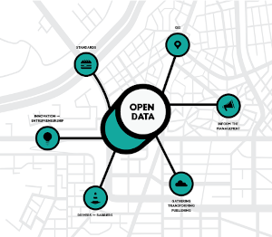

Como dados abertos contribui para o desenvolvimento de cidades inteligentes
Uma sociedade participativa é o principal pilar para o desenvolvimento de cidades mais inteligentes. A ideia desse paradigma, que ainda está em evolução, é que o investimento estratégico em desenvolvimento social e infraestrutura de TICs possa fomentar o desenvolvimento econômico sustentável e melhoria na qualidade de vida dos habitantes locais. Segundo algumas autoras, isso nos leva a uma mudança estrutural muito importante, passamos de um modelo de pensamento competitivo para colaborativo, global para local e tomada de decisão por poucos para uma que envolva todas as partes interessadas (Herrschel, 2013, Saint, 2014, van der Graaf and Veeckman, 2014 apud Öberg, 2017). Sem uma sociedade participativa, qualquer estratégia, por mais inteligente que seja, está fadada ao fracasso.
Entende-se que as cidades são singulares, com seus próprios desafios, contextos, virtudes e pontos de melhoria, sendo assim, não existe fórmula única para desenvolver sua “inteligência”. Empresas, sociedade civil organizada, governo, universidades, entidades sem fins lucrativos e demais entes sociais devem envolver-se em projetos estratégicos que possam responder às necessidades sociais e econômicas do local, estabelecendo prioridades e sendo flexíveis para adaptar-se às mudanças que possam aparecer.
Esse envolvimento de diversos entes sociais na busca por soluções permite ter uma visão holística sobre as demandas a serem tratadas e, espera-se com isso, soluções mais inclusivas.
Para que essa participação de todos possa acontecer precisamos de transparência nos dados e informações, além de um governo aberto. Pensando nisso, a iniciativa internacional Parceria para Governo Aberto (Open Governement Partnership) pretende “difundir e incentivar práticas governamentais relacionadas à transparência dos governos, ao acesso à informação pública e à participação social.” (Brasil, 2014). O Brasil foi um dos oito primeiros signatários dessa parceria que ao longo dos anos tem avançado para o “fortalecimento das democracias e no fomento à inovações e tecnologias para transformar a governança do século XXI”(Brasil, 2014)
Como parte do acordo, bianualmente os governos apresentam planos de ações elaborados juntos com a sociedade civil, no qual estabelecem compromissos concretos seguindo os princípios de transparência, participação cidadã, prestação de contas e tecnologia e inovação. Além disso, anualmente deve ser publicado um relatório apresentando a evolução da execução dos compromissos assumidos.
Até hoje o Brasil já apresentou quatro planos de ações. Ressalto alguns resultados alcançados em relação a transparência de informações e abertura de dados públicos advindos desses planos:
1º Plano de Ação Brasileiro para Governo Aberto(2011–2013):
- Criação do Portal Brasileiro de Dados Abertos para reunir todos os conjuntos de dados dos órgãos do poder executivo federal;
- Publicação os salários de servidores públicos do poder executivo federal;
- Desenvolvimento do portal e-SIC (Sistema eletrônico de informação ao cidadão).
2º Plano de Ação Brasileiro para Governo Aberto (2013–2016):
- Prestação de Contas Online de Recursos para Educação no Âmbito do Fundo Nacional de Desenvolvimento da Educação;
- Construção de painel público unificado de informações sobre os dados de execução do Programa Água para Todos;
- Desenvolvimento de Ferramentas para transparência e melhoria da Governança Fundiária;
- Criação do Banco de Preço da Administração Pública Federal;
- Abertura dos dados da execução do orçamento da União e das compras governamentais;
- Dados educacionais abertos;
- Dados abertos no âmbito do Ministério da Justiça e cidadania;
- Sistema de informações sobre a Lei Maria da Penha.
3º Plano de Ação Brasileiro para Governo Aberto (2016–2018):
- Criação de espaço de diálogo entre governo e sociedade para a geração e implementação de ações voltadas a transparência em meio ambiente.
Atualmente estamos em fase de execução do 4º Plano de Ação Brasileiro para Governo Aberto (2018–2021), o qual firma os seguintes compromissos no eixo de transparência de dados e informação:
- Transparência e controle no processo de reparação de Mariana e região;
- Transparência do processo legislativo;
- Transparência fundiária;
- Lei de Acesso a Informação em Estados e Municípos;
- Ecosistema de dados.
O compromisso relacionado ao ecossistema de dados tem como objetivo “estabelecer, de forma colaborativa, um modelo de referência de política de dados abertos que promova integração, capacitação e sensibilização entre sociedade e as três esferas de governo, a partir do mapeamento das demandas sociais.”(Brasil, 2018). Como produto, foi lançado em maio/ 2020 o “Modelo de referência de abertura de dados” para orientar “gestores, agentes públicos [de todas as esferas de poder e entes federativos] e sociedade quanto à importância do uso, publicação, sustentação e monitoramento dos dados abertos” (Brasil, 2020).
Já no âmbito legislativo tivemos a aprovação da Lei de Acesso à Informação em 2011 (Lei 12.527/2011), o Decreto 8.777/2016 que instituiu a Política de Dados Abertos do Poder Executivo Federal e este ano foi aprovado o Decreto 10.332/2020 que atualiza a Estratégia de Governo Digital para o período 2020–2022, trazendo em seu bojo o Plano de Transformação Digital, Plano Diretor de Tecnologia da Informação e Comunicação e o Plano de Dados aberto conforme decreto mencionado.
Mas não adianta muito todo esse esforço para mudar a cultura governamental e abrir os dados se eles não forem reutilizados. O que agrega valor aos dados publicados pelos órgãos públicos é seu reuso por parte do próprio governo e da sociedade.
No começo do texto falei que uma das mudanças de paradigmas que trás o conceito de cidades inteligentes é sair de um modelo global para focar na criação de soluções locais, pensando as cidades como entes singulares com suas próprias complexidades e contextos. O que possibilita essa análise única das cidades é a quantidade de dados que produzimos o tempo inteiro, tanto com os sensores espalhados pela cidade (exemplo: de trânsito, de clima e câmeras de segurança) , quanto através dos nossos dispositivos pessoais.

Quando se tem suficiente dados e metadados de algo, conseguimos entender seu comportamento, suas debilidades e pontos fortes. Ou seja, dados são o insumo para que os diversos entes sociais possam desenvolver projetos estratégicos para o avanço tecnológico, econômico e social. A coleta, análise e reuso desses dados é o que possibilita o aumento da inteligência de uma cidade.
Vale ressaltar que me refiro a dados abertos, aqueles que não sofrem nenhum tipo de embargo legislativo; a dados de domínio público, ou seja, aqueles que qualquer pessoa pode livremente usá-los, reutilizá-los e redistribuí-los, sendo exigido, no máximo, a creditação da autoria e compartilhamento usando a mesma licença (Open Knowledge Foundation, [201-?]). Sejam eles dados abertos governamentais ou de empresas — grandes empresas também estão em um movimento para abrir os seus dados como forma de demonstrar seu comprometimento com a transparência e sustentabilidade dos seus negócios, por exemplo a Nike, Nubank, Uber e Enel já publicaram alguns conjuntos de dados em formato aberto.
Não estou falando sobre dados pessoais, esse tipo de dado a Lei Geral de Proteção de Dados Pessoais (Lei 13.709/2018) reconhece que cada pessoa é dona dos seus próprios dados e pode administrá-los.
Tá, mas como sei se um dado é aberto?
Existem 3 leis pensadas para Dados Governamentais Abertos e que podem ser aplicadas de forma ampla. São elas:
- Se não pode ser pesquisável ou indexado na web, não existe;
- Se não estiver em formato aberto e legível por máquina, não pode ser reutilizado;
- Se sofrer algum tipo de embargo para reutilização, não é útil.
O Decreto 8.777/2016 define dado aberto como “dados acessíveis ao público, representados em meio digital, estruturados em formato aberto, processáveis por máquina, referenciados na internet e disponibilizados sob licença aberta que permita sua livre utilização, consumo ou cruzamento, limitando-se a creditar a autoria ou a fonte;”
Formato aberto quer dizer um formato de arquivo que suas especificações estejam documentadas publicamente e de livre acesso, isso quer dizer que aquele arquivo .xls do Excel não é formato aberto, ele é de propriedade da Microsoft. O tipo de arquivo que costumamos usar para representar planilha é o .csv.
Dois dos principais objetivos para abertura de dados são: fomentar o controle social para uma gestão pública participativa e democrática e promover o desenvolvimento tecnológico e a inovação. Já conseguimos encontrar alguns aplicativos e serviços que seus desenvolvimentos só foram possíveis a partir de abertura de dados, por exemplo:
- Cittamobi: usa dados abertos sobre o trânsito atrelado a dados das companhias de transporte público para fornecer o serviço de previsão de horário do transporte público, melhor rota usando esses mesmo tipo de transporte etc.
- Grafeno6: fornece para prefeituras uma análise detalhada sobre a educação dos municípios. Outro produto é na área de licitação, fornecendo análises sobre as licitações que a empresa participa/participou e permitir que ela acompanhe como está sua concorrência.
- Os vários painéis da COVID-19 no país. Destaco o do Brasil.IO que reúne dados de todos os municípios brasileiros em um painel bem completo.
- Serenata de amor: avalia as Cota para Exercício da Atividade Parlamentar (CEAP) de deputados federais e senadores e quando encontra algum gasto suspeito publica um tweet com o nome do parlamentar e o link para a nota fiscal e dados da empresa que a emitiu.
Mas, nem tudo são flores. Como ouvimos falar no começo desse ano, a Uber começou a emitir alertas de segurança para motoristas e até impedir o pedido de corridas oriundas de áreas classificadas como de risco. Essa classificação é feita após análise de machine learning usando dados de corridas realizadas pela própria empresa. A 99 também faz o mesmo tipo de classificação desde 2017, mesclando dados de suas corridas com os dados abertos de segurança pública (El país, 2020). Esse tipo de “solução” tem um impacto social negativo enorme, piora o estigma que a população daquela área sofre e aprofunda a exclusão do seu acesso a serviços.
Além de abrir os dados é preciso estimular o ecossistema de dados envolvendo todos os entes sociais para que o uso desses dados e o desenvolvimento de tecnologias seja pensando na melhoria da qualidade de vida de todos.
Transparência nas informações, abertura de dados e a participação de diversos entes sociais no desenvolvimento de soluções para a cidade é essencial para que caminhemos na direção de cidades inteligentes e não para uma cidade meramente tecnológica que aprofunde cada vez mais seus problemas sociais.
Esse texto foi composto por anotações da palestra “Dados abertos e Cidades inteligentes” que apresentei para o grupo de pesquisa em Cidades Inteligentes da Liga Pernambucana de Direito Digital da Universidade de Pernambuco em 19 de outubro de 2020.
Continue estudando:
- A (more?) intelligent city
- Index Cities in Motion
- Ciudades inteligentes: el poder de nuestros datos
- Ciudades inteligentes: el dilema entre la privacidad de datos y bien común
- Datos abiertos y ciudades inteligentes en América Latina: Estudio de casos
- Deloitte. Open data: Driving growth, ingenuity and innovation
-----